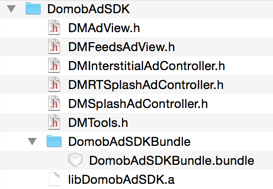
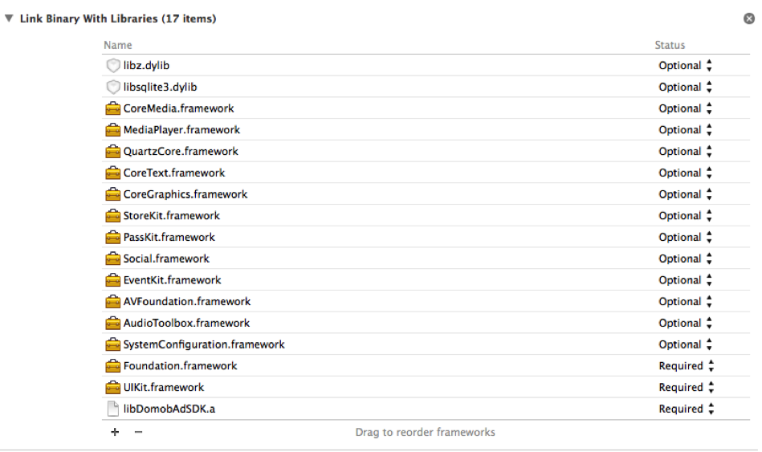
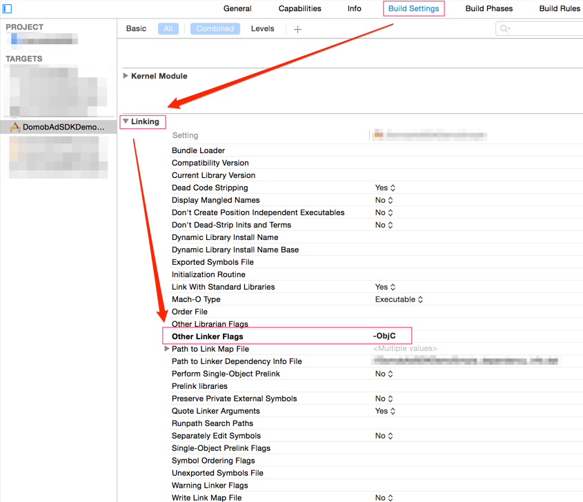

Domob iOS Ad SDK
必要条件
Xcode 6或更高版本iOS 4.3或更高版本
获取SDK
请前往多盟官网的SDK下载页面下载最新的SDK发行包。
注意：该页在登陆后才能访问。
加入SDK
将SDK的发行包（一个zip文件）解压缩。其中需要添加到项目中的文件包括一个静态库文件（.a），若干个Objective-C头文件（.h）以及一个Bundle文件（.bundle）。
-
将上述文件，添加到您的项目中。建议直接将
DomobAdSDK文件夹添加到项目中。包含的内容，如下图： -
若要SDK正常工作，需要向项目中添加下面这些Framework，如下图：
 -
另外还需要在项目的
Build Settings>Linking>Other Linker Flags中添加–ObjC， 如图:
这样，就可以开始使用多盟SDK了。
获取地理位置方法的说明
为了能够在iOS 8及以上系统中能够正确获取地理位置信息，开发者需要在项目的plist文件中配置苹果新添加的key（如下表），来支持App获取地理位置信息。
| Key | Summary |
|---|---|
| NSLocationAlwaysUsageDescription | Specifies the reason for accessing the user’s location information. See NSLocationAlwaysUsageDescription for details. |
| NSLocationWhenInUseUsageDescription | Specifies the reason for accessing the user’s location information. See NSLocationWhenInUseUsageDescription for details. |
说明：由于部分广告会定向投递到特定的地域，因此SDK需要获取地理位置以支持广告的定向投放。在无法获取相关地理位置信息时，将不展示广告信息。
使用横幅广告（Banner Ad）
若要在应用中添加一个横幅广告（Banner Ad），只需要简单的几步：
- 导入
DMAdView.h头文件。 - 声明一个
DMAdView的实例。 - 使您的UIViewController实现
DMAdViewDelegate。 - 在您的UIViewController的m文件中，使用您从多盟官网获得的Publisher ID和 Placement ID以及您期望的广告尺寸，来初始化DMAdView。
- 设置DMAdView的委派。
- 设置DMAdView的
rootViewController。 - 设置DMAdView的
frame，把DMAdView放置在您希望的位置。 - 将DMAdView添加到父视图中。
- 最后，调用
loadAd方法，开始请求广告。
下面的代码片段，简要说明了这个过程：
#import "DMAdView.h"
@interface DMBannerSampleViewController: UIViewController <DMAdViewDelegate>
{
DMAdView *_dmAdView;
}
@end
@implementation DMBannerSampleViewController
- (id)initWithNibName:(NSString *)nibNameOrNil bundle:(NSBundle *)nibBundleOrNil
{
self = [super initWithNibName:nibNameOrNil bundle:nibBundleOrNil];
if (self)
{
self.title = NSLocalizedString(@"Banner", @"Banner");
// 创建广告视图，此处使用的是测试ID，请登陆多盟官网（www.domob.cn）获取新的ID
// Creat advertisement view please get your own ID from domob website
_dmAdView = [[DMAdView alloc] initWithPublisherId:@"56OJyGFYuMOI695Q87"
placementId:@"16TLwMxaAc0izY7NJgmfgl5k"];
// 设置广告视图的位置宽与高均设置为0即可，该广告视图默认是横竖屏自适应，但需要在旋转时调用orientationChanged方法
// Set the frame of advertisement view
_dmAdView.frame = CGRectMake(0, 20, FLEXIBLE_SIZE.width,FLEXIBLE_SIZE.height);
}
return self;
}
- (void)viewDidLoad
{
[super viewDidLoad];
_dmAdView.delegate = self; // 设置 Delegate
_dmAdView.rootViewController = self; // 设置 rootViewController
[self.view addSubview:_dmAdView]; // 将广告视图添加到父视图中
[_dmAdView loadAd]; // 开始加载广告
}
- (void)viewDidUnload
{
[super viewDidUnload];
[_dmAdView removeFromSuperview]; // 将广告试图从父视图中移除
}
//针对Banner的横竖屏自适应方法
//method For multible orientation
- (void)willRotateToInterfaceOrientation:(UIInterfaceOrientation)toInterfaceOrientation
duration:(NSTimeInterval)duration
{
[_dmAdView orientationChanged];
}
- (void)dealloc
{
_dmAdView.delegate = nil;
_dmAdView.rootViewController = nil;
[_dmAdView release];
[super dealloc];
}
@end
关于DMAdView的释放
在这里强烈建议您，在释放DMAdView之前，将DMAdView的属性delegat和rootViewController设置为nil。如下例：
- (void)dealloc
{
_dmAdView.delegate = nil;
_dmAdView.rootViewController = nil;
[_dmAdView release];
[super dealloc];
}
设置可选参数
还可以为DMAdView设置一些可选参数，来提高广告投放的精准性。这些参数的设置方法都定义在DMAdview.h中，如下：
// 设置地理位置信息
- (void)setLocation:(CLLocation *)location;
// 设置邮编
- (void)setPostcode:(NSString *)postcode;
// 设置关键字
- (void)setKeywords:(NSString *)keywords;
// 设置用户年龄
- (void)setUserBirthday:(NSString *)userBirthday;
// 设置用户性别
- (void)setUserGender:(DMUserGenderType)userGender;
实现DMAdViewDelegate
您可以通过实现DMAdViewDelegate中定义的方法，来跟踪广告生命周期中的各个阶段。所有这些方法也都定义在DMAdView.h中，如下：
@protocol DMAdViewDelegate <NSObject>
@optional
// 成功加载广告后，回调该方法
- (void)dmAdViewSuccessToLoadAd:(DMAdView *)adView;
// 加载广告失败后，回调该方法
- (void)dmAdViewFailToLoadAd:(DMAdView *)adView withError:(NSError *)error;
// 当将要呈现出 Modal View 时，回调该方法。如打开内置浏览器。
- (void)dmWillPresentModalViewFromAd:(DMAdView *)adView;
// 当呈现的 Modal View 被关闭后，回调该方法。如内置浏览器被关闭。
- (void)dmDidDismissModalViewFromAd:(DMAdView *)adView;
// 当因用户的操作（如点击下载类广告，需要跳转到Store），需要离开当前应用时，回调该方法
- (void)dmApplicationWillEnterBackgroundFromAd:(DMAdView *)adView;
@end
横幅广告的尺寸
目前我们所支持的横幅广告尺寸包括
| Size | Recommended |
|---|---|
| 320x50 | iPhone/iPod Touch |
| 300x250 | iPhone/iPod Touch |
| 488x80 | iPad |
| 728x90 | iPad |
| 600x500 | iPad |
| Flexible | All iOS Devices |
我们强烈建议您使用Flexible Banner，它可以适应各种类型的设备，以及进行横竖屏的自适应（Flexible Banner的高度在iPhone/iPod Touch上为50，在iPad上为90，宽度自适应）。上例中所展示的也是使用Flexible Banner的方法。
如果想使用固定尺寸的横幅广告，则可通过使用DMAdView.h中提供的其他宏定义来实现，如下：
[_dmAdView setAdSize:DOMOB_AD_SIZE_320x50];
_dmAdView.frame = CGRectMake(0, 20, DOMOB_AD_SIZE_320x50.width,DOMOB_AD_SIZE_320x50.height);
展示的是使用320x50尺寸的横幅广告的方法。
使用插屏广告（Interstitial Ad）
插屏广告的使用，同样非常简单，只需要几步即可完成。
- 导入
DMInterstitialAdController.h头文件。 - 声明一个
DMInterstitialAdController的实例。 - 让您的UIViewController实现
DMInterstitialAdControllerDelegate协议。 - 在合适的位置初始化一个
DMInterstitialAdController。 - 在合适的时候，调用
loadAd方法，来预加载插屏广告。 - 在想要呈现插屏广告的时候，调用
present方法，来呈现插屏广告。 注意在呈现完成后，需要重新通过loadAd方法，加载一条新广告，用于下次呈现。
下面的代码片段，简单描述了这个过程：
@interface DMInterstitialSampleViewController: UIViewController <DMInterstitialAd-ControllerDelegate>
{
DMInterstitialAdController *_dmInterstitial;
}
@end
@implementation DMInterstitialSampleViewController
- (void)viewDidLoad
{
[super viewDidLoad];
// 初始化插屏广告，此处使用的是测试ID，请登陆多盟官网（www.domob.cn）获取新的ID
_dmInterstitial = [[DMInterstitialAdController alloc] initWithPublisherId:@“56OJyM1ouMGoULfJaL"
placementId:@"16TLwebvAchkAY6iOWkE6kpk"
rootViewController:self];
// 设置插屏广告的Delegate
_dmInterstitial.delegate = self;
// 加载一条插屏广告
[_dmInterstitial loadAd];
}
- (void)viewDidUnload
{
[super viewDidUnload];
_dmInterstitial.delegate = nil; // 释放插屏广告对象前，请先将其delegate设置为nil
[_dmInterstitial release]; // 释放插屏广告对象
}
- (void)onPresentBtnClicked:(id)sender
{
// 在需要呈现插屏广告前，先通过isReady方法检查广告是否就绪
if (_dmInterstitial.isReady)
{
[_dmInterstitial present]; // 呈现插屏广告
}
else
{
// 如果还没有ready，可以再调用loadAd
[_dmInterstitial loadAd];
}
}
// 当插屏广告被关闭后，回调该方法
- (void)dmInterstitialDidDismissScreen:(DMInterstitialAdController *)dmInterstitial
{
// 插屏广告关闭后，加载一条新广告用于下次呈现
[_dmInterstitial loadAd];
}
@end
关于DMInterstitialAdController的释放
在这里强烈建议您，在释放DMInterstitialAdController之前，将其delegate属性设置为nil。如：
- (void)viewDidUnload
{
[super viewDidUnload];
_dmInterstitial.delegate = nil; // 释放插屏广告对象前，请先将其delegate设置为nil
[_dmInterstitial release]; // 释放插屏广告对象
}
设置可选参数
与DMAdView相同，也可以为DMInterstitialAdController设置一些可选参数，来提高广告投放的精准性。这些参数的设置方法都定义在DMInterstitialAdController.h中，如下：
// 设置地理位置信息
- (void)setLocation:(CLLocation *)location;
// 设置邮编
- (void)setPostcode:(NSString *)postcode;
// 设置关键字
- (void)setKeywords:(NSString *)keywords;
// 设置用户年龄
- (void)setUserBirthday:(NSString *)userBirthday;
// 设置用户性别
- (void)setUserGender:(DMUserGenderType)userGender;
实现DMInterstitialAdControllerDelegate
您可以通过实现DMInterstitialAdControllerDelegate中定义的方法，来跟踪广告生命周期中的各个阶段。所有这些方法也都定义在DMInterstitialAdController.h中，如下：
@protocol DMInterstitialAdControllerDelegate <DMAdViewDelegate>
@optional
// 当插屏广告被成功加载后，回调该方法
- (void)dmInterstitialSuccessToLoadAd:(DMInterstitialAdController *)dmInterstitial;
// 当插屏广告加载失败后，回调该方法
- (void)dmInterstitialFailToLoadAd:(DMInterstitialAdController *)dmInterstitial withError:(NSError *)err;
// 当插屏广告要被呈现出来前，回调该方法
- (void)dmInterstitialWillPresentScreen:(DMInterstitialAdController *)dmInterstitial;
// 当插屏广告被关闭后，回调该方法
- (void)dmInterstitialDidDismissScreen:(DMInterstitialAdController *)dmInterstitial;
// 当将要呈现出 Modal View 时，回调该方法。如打开内置浏览器。
- (void)dmInterstitialWillPresentModalView:(DMInterstitialAdController *)dmInterstitial;
// 当呈现的 Modal View 被关闭后，回调该方法。如内置浏览器被关闭。
- (void)dmInterstitialDidDismissModalView:(DMInterstitialAdController *)dmInterstitial;
// 当因用户的操作（如点击下载类广告，需要跳转到Store），需要离开当前应用时，回调该方法
- (void)dmInterstitialApplicationWillEnterBackground:(DMInterstitialAdController *)dmInterstitial;
@end
使用信息流广告（Feeds Ad）
信息流广告的使用，需要以下几步：
- 导入
DMFeedsAdView.h头文件。 - 声明一个
DMFeedsAdView的实例。 - 让您的UIViewController实现
DMFeedsAdViewDelegate协议。 - 在您的Controller的m文件中，使用Publisher ID和Placement ID以及负责呈现信息流广告的起始坐标
origin来初始化一个DMFeedsAdView，同时传递当前Controller，设置代理。 - 在合适的时候，调用
loadAd方法，来预加载信息流广告。 - 在想要呈现信息流广告的时候，调用
present方法，来呈现信息流广告。 - 在呈现完成后，需要重新通过
loadAd方法加载一条新广告，用于下次呈现。 注意信息流只支持竖屏的展示，如果当前界面支持横屏 请做如下操作以防止界面混乱。- 广告在播放时，如果由竖屏转为横屏，请调用
closeAd关闭广告。 - 如果在横屏状态下拉界面，请
阻止广告展现。
- 广告在播放时，如果由竖屏转为横屏，请调用
下面的代码片段，简单描述了这个过程：
#import "DMFeedsAdView.h"
@interface DMFeedsAdViewController : UIViewController<DMFeedsAdViewDelegate>
@property (nonatomic, retain) DMFeedsAdView *feedsView;
@end
@implementation DMFeedsAdViewController
- (void)viewDidLoad
{
[super viewDidLoad];
//注意区分系统获取不同的起始点坐标
origin = CGPointMake(0, 0);
if (!([[[UIDevice currentDevice] systemVersion] floatValue] < 7.0)) {
origin = CGPointMake(0, 20);
// do not forget if there is a statusBar down 20 pixels height in iOS 7.
self.myTable.frame = CGRectMake(origin.x,
origin.y,
self.view.frame.size.width,
self.view.frame.size.height);
}
//初始化Feeds Ad View
/**feeds ad view start **/
_feedsView = [[DMFeedsAdView alloc]initWithPublisherId:DMPUBLISHERID
placementId:DMPLCAEMENTID_FEEDS
origin:origin];
_feedsView.rootViewController = self;
_feedsView.delegate = self;
[_feedsView loadAd];
/**feeds ad view end **/
//以下代码是tableView的刷新代码 和 Feeds Ad View 无关
/** refresh view **/
if (_refreshHeaderView == nil) {
EGORefreshTableHeaderView *view = [[EGORefreshTableHeaderView alloc]
initWithFrame:CGRectMake(0.0f,0.0f - _feedsView.frame.size.height,
self.view.frame.size.width,
_feedsView.frame.size.height)];
view.delegate = self;
[self.myTable addSubview:view];
_refreshHeaderView = view;
[view release];
}
// refresh view update the last update date
[_refreshHeaderView refreshLastUpdatedDate];
}
//tableView的刷新方法 在这里判断如果是竖屏 展示广告
- (void)reloadTableViewDataSource{
// should be calling your tableviews data source model to reload
// put here just for demo
_reloading = YES;
/** 竖屏情况开始展现广告
present feeds ad view
please choose the orientation you support
UIDeviceOrientationPortrait/UIDeviceOrientationPortraitUpsideDown **/
if ([[UIApplication sharedApplication] statusBarOrientation]
== UIInterfaceOrientationPortrait)
{
[_feedsView present];
}
}
//鉴于显示广告时程序界面依然可操作，所以我们提供了关闭Feeds ad view的方法closeAd.需要开发者在出现视图切换时手动关闭广告。（例：用户点击cell进入下一个界面）
- (void)tableView:(UITableView *)tableView didSelectRowAtIndexPath:(NSIndexPath *)indexPath
{
// close the ad view by yourself
[_feedsView closeAd];
}
#pragma mark
#pragma mark FeedsAdViewDelegate
- (void)dmFeedsSuccessToLoadAd:(DMFeedsAdView *)dmFeeds
{
NSLog(@" [Domob FeedsAdView] SuccessToLoadAd");
}
- (void)dmFeedsFailToLoadAd:(DMFeedsAdView *)dmFeeds withError:(NSError *)err
{
NSLog(@" [Domob FeedsAdView] FailToLoadAd");
}
- (void)dmFeedsDidClicked:(DMFeedsAdView *)dmFeeds
{
NSLog(@" [Domob FeedsAdView] DidClicked");
}
// Feeds广告生命周期的回调
- (void)dmFeedsWillPresentScreen:(DMFeedsAdView *)dmFeeds
{
[UIView beginAnimations:nil context:NULL];
[UIView setAnimationDuration:.3];
[self.myTable setFrame:CGRectMake(origin.x,
self.feedsView.frame.size.height+origin.y,
self.myTable.frame.size.width,
self.myTable.frame.size.height)];
[UIView commitAnimations];
}
//我们建议在视图消失时实现加载下一条广告
- (void)dmFeedsDidDismissScreen:(DMFeedsAdView *)dmFeeds
{
[UIView beginAnimations:nil context:NULL];
[UIView setAnimationDuration:.3];
[self.myTable setFrame:CGRectMake(origin.x,
origin.y,
self.myTable.frame.size.width,
self.myTable.frame.size.height)];
[UIView commitAnimations];
//load ad when the ad view dismiss
[_feedsView loadAd];
}
// 由于用户对广告的操作引发的事件回调
- (void)dmFeedsWillPresentModalView:(DMFeedsAdView *)dmFeeds
{
NSLog(@" [Domob FeedsAdView] WillPresentModalView");
}
- (void)dmFeedsDidDismissModalView:(DMFeedsAdView *)dmFeeds
{
NSLog(@" [Domob FeedsAdView] DidDismissModalView");
}
- (void)dmFeedsApplicationWillEnterBackground:(DMFeedsAdView *)dmFeeds
{
NSLog(@" [Domob FeedsAdView] WillEnterBackground");
}
关于DMFeedsAdView的释放
在这里强烈建议您，在释放DMFeedsAdView之前，将其delegate属性设置为nil。
设置可选参数
可以为DMFeedsAdView设置一些可选参数，来提高广告投放的精准性。这些参数的设置方法都定义在DMFeedsAdView.h中，如下：
// 设置地理位置信息
- (void)setLocation:(CLLocation *)location;
// 设置邮编
- (void)setPostcode:(NSString *)postcode;
// 设置关键字
- (void)setKeywords:(NSString *)keywords;
// 设置用户年龄
- (void)setUserBirthday:(NSString *)userBirthday;
// 设置用户性别
- (void)setUserGender:(DMUserGenderType)userGender;
实现DMFeedsAdViewDelegate
您可以通过实现DMFeedsAdViewDelegate中定义的方法，来跟踪广告生命周期中的各个阶段。所有这些方法也都定义在DMFeedsAdView.h中，如下：
@protocol DMFeedsAdViewDelegate
@optional
// Sent when an ad request success to load an ad
- (void)dmFeedsSuccessToLoadAd:(DMFeedsAdView *)dmFeeds;
// Sent when an ad request fail to load an ad
- (void)dmFeedsFailToLoadAd:(DMFeedsAdView *)dmFeeds withError:(NSError *)err;
// Sent when the feeds ad is clicked
- (void)dmFeedsDidClicked:(DMFeedsAdView *)dmFeeds;
// Sent just before presenting the user a modal view
- (void)dmFeedsWillPresentModalView:(DMFeedsAdView *)dmFeeds;
// Sent just after dismissing the modal view
- (void)dmFeedsDidDismissModalView:(DMFeedsAdView *)dmFeeds;
// Sent just before the application will background or terminate because the user's action
// (Such as the user clicked on an ad that will launch App Store).
- (void)dmFeedsApplicationWillEnterBackground:(DMFeedsAdView *)dmFeeds;
// Sent just before presenting an feeds ad view
- (void)dmFeedsWillPresentScreen:(DMFeedsAdView *)dmFeeds;
// Sent just after dismissing a feeds ad view
- (void)dmFeedsDidDismissScreen:(DMFeedsAdView *)dmFeeds;
@end
使用开屏广告（Splash Ad）
开屏广告的使用场景是在App刚刚开启时，在SDK内分为缓存开屏和实时开屏两种。
缓存开屏的加载机制为，本次加载，缓存本次的广告应答以及相关资源，下次开启时展现。
实时开屏在每次开启时都会实时请求广告并加载和缓存资源，在超时时间前加载完成即自动展现。
详细使用方法可见Sample中的App委派类的application:didFinishLaunchingWithOptions:方法中使用的示例代码。
| 开屏广告类型 | 广告请求流程 | 优点 | 缺点 |
|---|---|---|---|
| 缓存开屏 | 当次缓存，下次展现。 | 无需等待广告loading,体验好。 | 填充到展现流失率较高。 |
| 实时开屏 | 当次加载，当次展现，超时放弃（超时时限开发者可设）。 | 填充到展现流失率较低。 | 用户需要短暂的等待。 |
下面的代码片段，简单描述了这个过程：
#import "DMSplashAdController.h"
#import "DMRTSplashAdController.h"
@interface DMAppDelegate : UIResponder <UIApplicationDelegate, DMSplashAdControllerDelegate>
@property (retain, nonatomic) UIWindow *window;
@property (retain, nonatomic) ViewController *firstViewController;
@property (retain, nonatomic) DMSplashAdController *splashAd;
@property (retain, nonatomic) DMRTSplashAdController *rtSplashAd;
@end
- (BOOL)application:(UIApplication *)application didFinishLaunchingWithOptions:(NSDictionary *)launchOptions
{
self.window = [[[UIWindow alloc] initWithFrame:[[UIScreen mainScreen] bounds]] autorelease];
self.firstViewController = [[[ViewController alloc] init] autorelease];
self.window.rootViewController = self.firstViewController;
[self.window makeKeyAndVisible];
//开发者自主选择实时开屏或者缓存开屏
BOOL isRealTimeSplash = NO;
//呈现实时开屏广告
if (isRealTimeSplash) {
_rtSplashAd =[[DMRTSplashAdController alloc]initWithPublisherId:DOMOB_PUBLISHERID
placementId:DOMOB_RTSPLASHPLACEMENTID
size:CGSizeMake(0, 0)
offset:0
window:self.window
background:[UIColor colorWithPatternImage:[UIImage imageNamed:@"Default.png"]]
animation:YES];
_rtSplashAd.delegate = self;
[_rtSplashAd present];
}else{
// 呈现缓存开屏广告
_splashAd = [[DMSplashAdController alloc]initWithPublisherId:DOMOB_PUBLISHERID placementId:DOMOB_SPLASHPLACEMENTID
size:CGSizeMake(0, 0)
offset:0
window:self.window
background:[UIColor colorWithPatternImage:[UIImage imageNamed:@"Default.png"]]
animation:YES];
_splashAd.delegate = self;
if (_splashAd.isReady)
{
[_splashAd present];
}
}
return YES;
}
设置可选参数
与其他广告形式相同，也可以为DMSplashAdController设置一些可选参数，来提高广告投放的精准性。这些参数的设置方法都定义在DMSplashAdController.h中，如下：
// 设置地理位置信息
- (void)setLocation:(CLLocation *)location;
// 设置邮编
- (void)setPostcode:(NSString *)postcode;
// 设置关键字
- (void)setKeywords:(NSString *)keywords;
// 设置用户年龄
- (void)setUserBirthday:(NSString *)userBirthday;
// 设置用户性别
- (void)setUserGender:(DMUserGenderType)userGender;
实现DMSplashAdControllerDelegate
您可以通过实现DMSplashAdControllerDelegate中定义的方法，来跟踪广告生命周期中的各个阶段。所有这些方法也都定义在DMSplashAdController.h中，如下：
@protocol DMSplashAdControllerDelegate
@optional
// 当开屏广告加载成功后，回调该方法
- (void)dmSplashAdSuccessToLoadAd:(DMSplashAdController *)dmSplashAd;
// 当开屏广告加载失败后，回调该方法
- (void)dmSplashAdFailToLoadAd:(DMSplashAdController *)dmSplashAd withError:(NSError *)err;
// 当插屏广告要被呈现出来前，回调该方法
- (void)dmSplashAdWillPresentScreen:(DMSplashAdController *)dmSplashAd;
// 当插屏广告被关闭后，回调该方法
- (void)dmSplashAdDidDismissScreen:(DMSplashAdController *)dmSplashAd;
@end
获取示例
我们的实例工程都托管在Github上
- iOS Ad SDK 示例工程 其中包括上述所有广告形式的使用方法。
- iOS Ad SDK Cocos-2dx 示例工程
- iOS Ad SDK Unity3D 插件工程
获得帮助
如还有疑问，欢迎随时发邮件到support@domob.cn获得更多帮助。